עבודות שביצעתי
כמה מהעבודות, התקלות והפתרונות.
איטום גג והכנת התשתית
כשיש חדירת מים, הצעד הראשון הוא להבין איפה המערכת נכשלה. בפרויקט הזה העבודה כללה ניקוי, הכנה, טיפול בנקודות רגישות ויישום מערכת איטום חדשה.
אפשר להחליק או להשתמש בחצים כדי לראות תמונות נוספות.
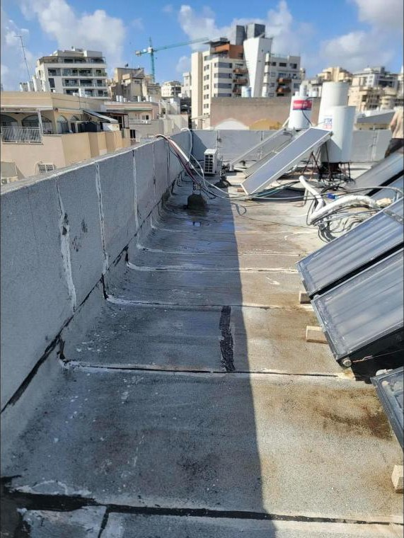
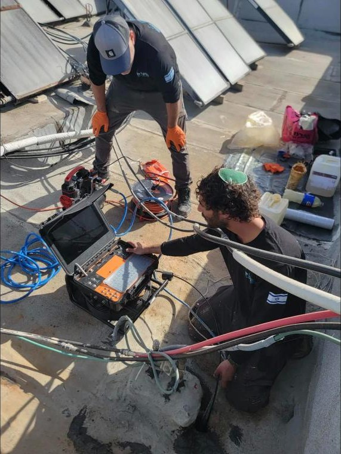
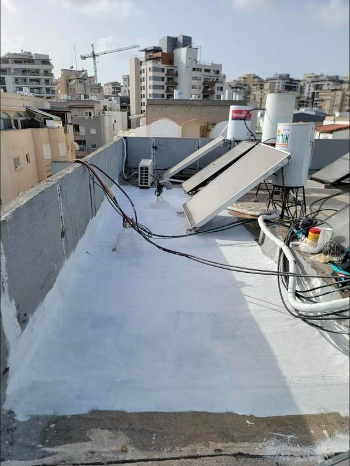

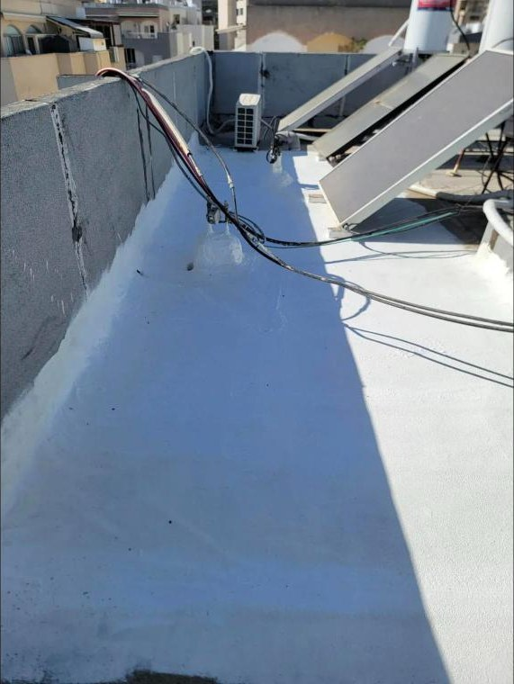
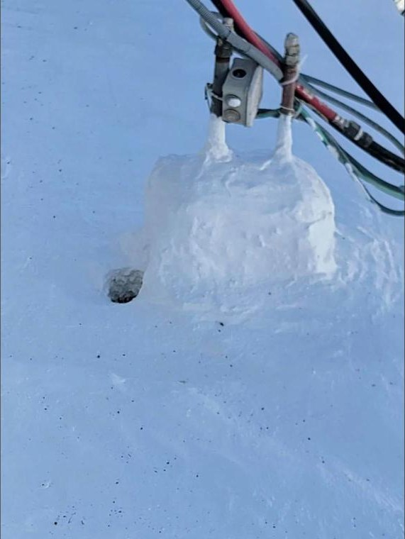
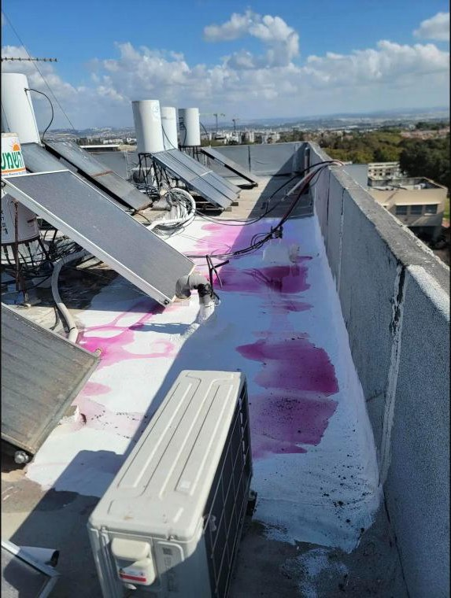
שיקום אזור חוץ
פירוק אזורים בעייתיים, תיקון תשתיות, איטום וגמר נקי. הדגש היה על חיבור נכון בין המשטחים ועל עבודה שתישאר יציבה לאורך זמן.
אפשר להחליק או להשתמש בחצים כדי לראות תמונות נוספות.
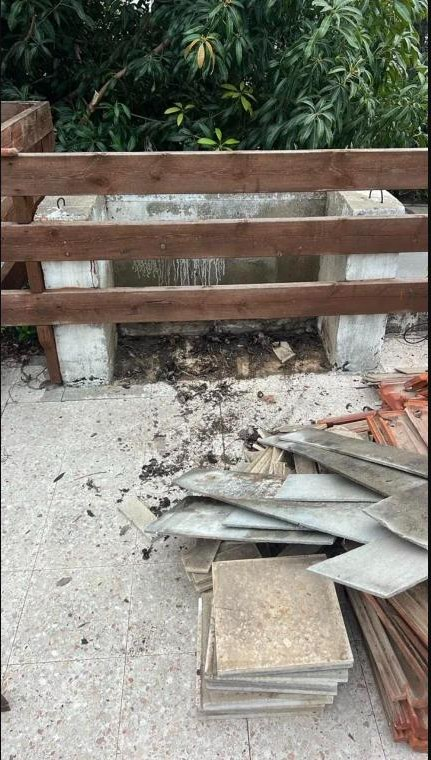
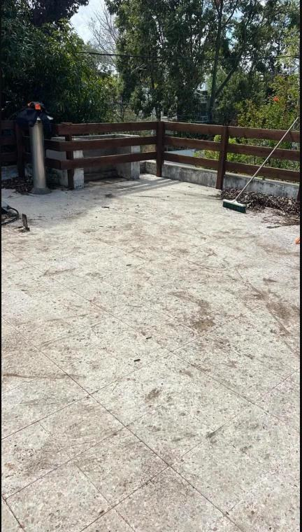

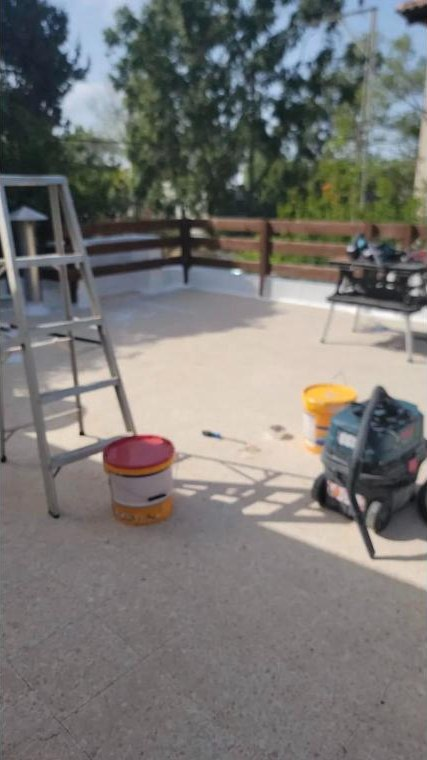
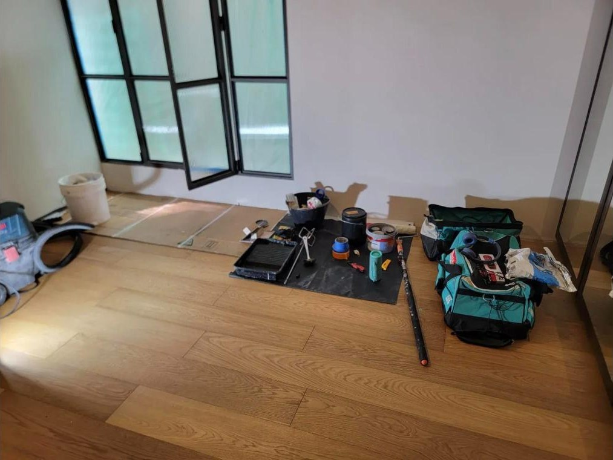

שיקום בטון וברזל
בטון מתפורר הוא לעיתים תוצאה של לחות וקורוזיה בזיון. העבודה כללה פתיחה מבוקרת, טיפול באזור הפגוע ושיקום התשתית לפני סגירה.
אפשר להחליק או להשתמש בחצים כדי לראות תמונות נוספות.
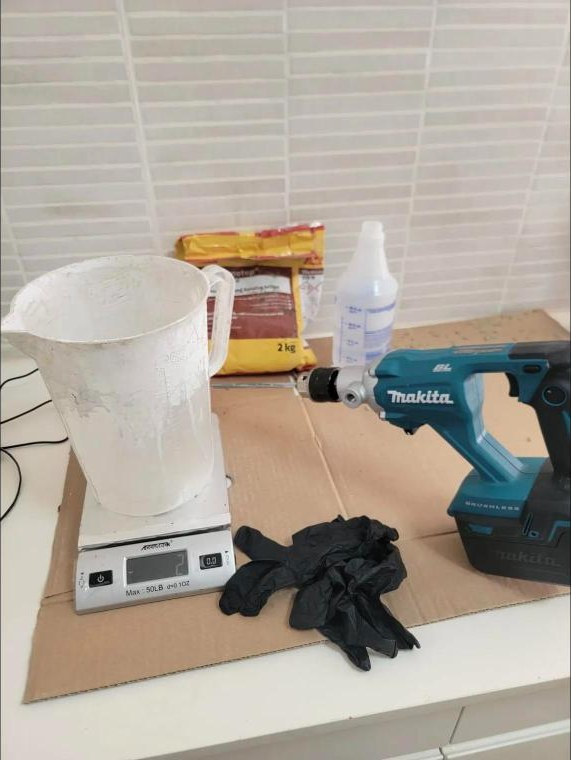


עבודת גמר והתקנה
עבודות קטנות ומדויקות דורשות אותה תשומת לב כמו פרויקט גדול: סימון, יישור, התקנה נקייה וגמר מסודר.
אפשר להחליק או להשתמש בחצים כדי לראות תמונות נוספות.


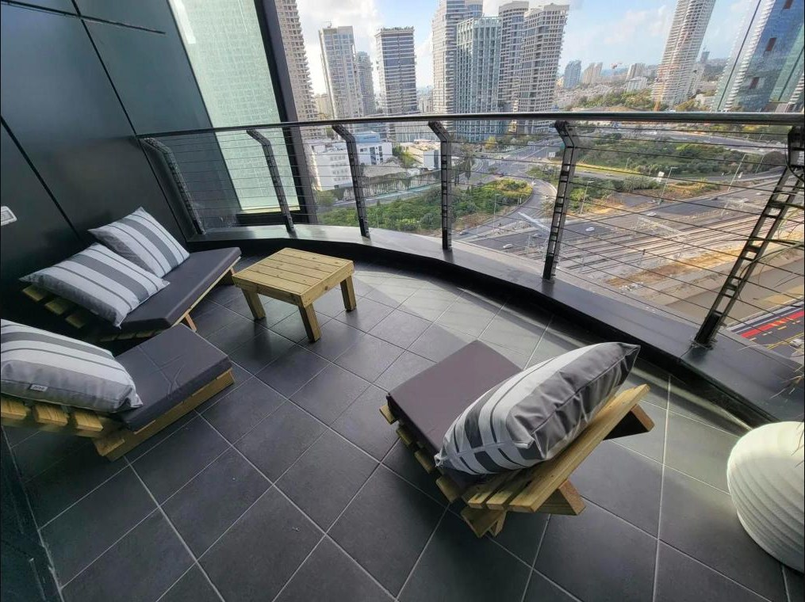


איטום גג רעפים
בדיקה וטיפול בנקודות חדירה סביב חיבורים ופרטי גג, תוך שמירה על המערכת הקיימת ככל שניתן.
אפשר להחליק או להשתמש בחצים כדי לראות תמונות נוספות.
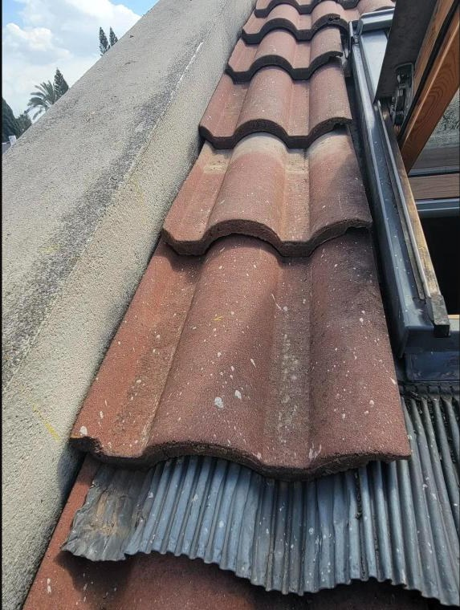
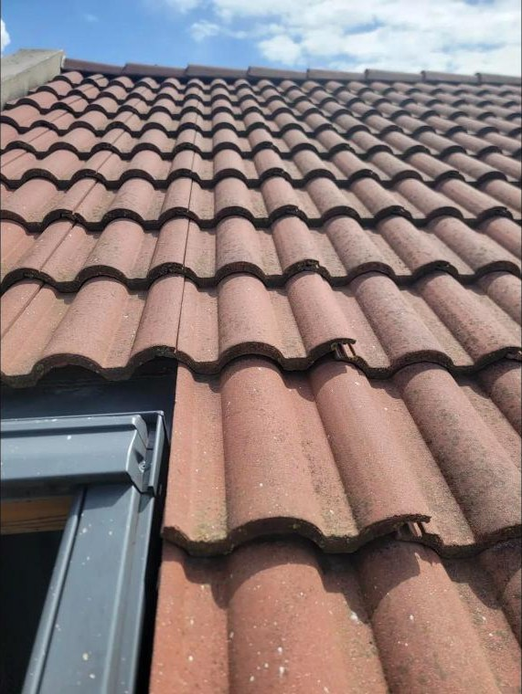


תיקונים ושיקום בתל ברוך
עבודה משולבת שכללה איתור נקודות כשל, תיקון וגמר. המטרה הייתה לפתור את המקור ולא רק להסתיר את הסימן.
אפשר להחליק או להשתמש בחצים כדי לראות תמונות נוספות.
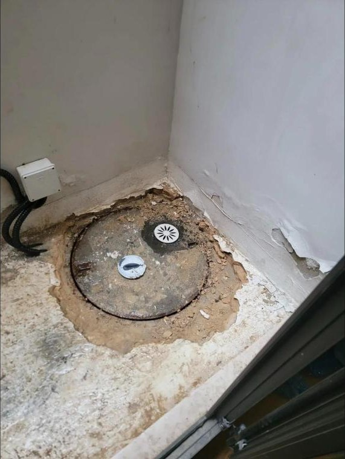


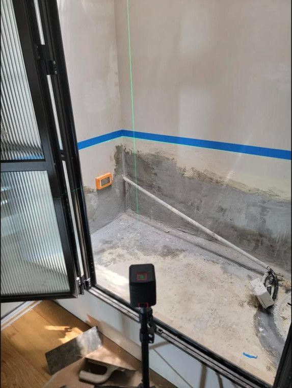